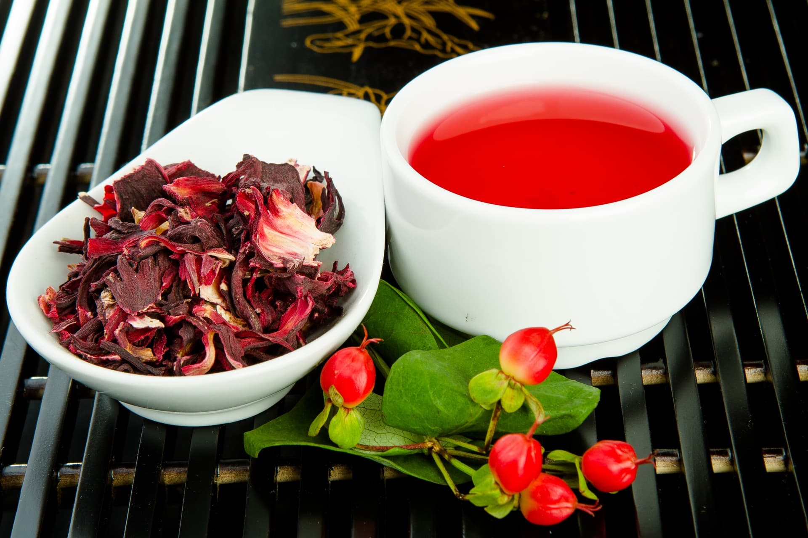
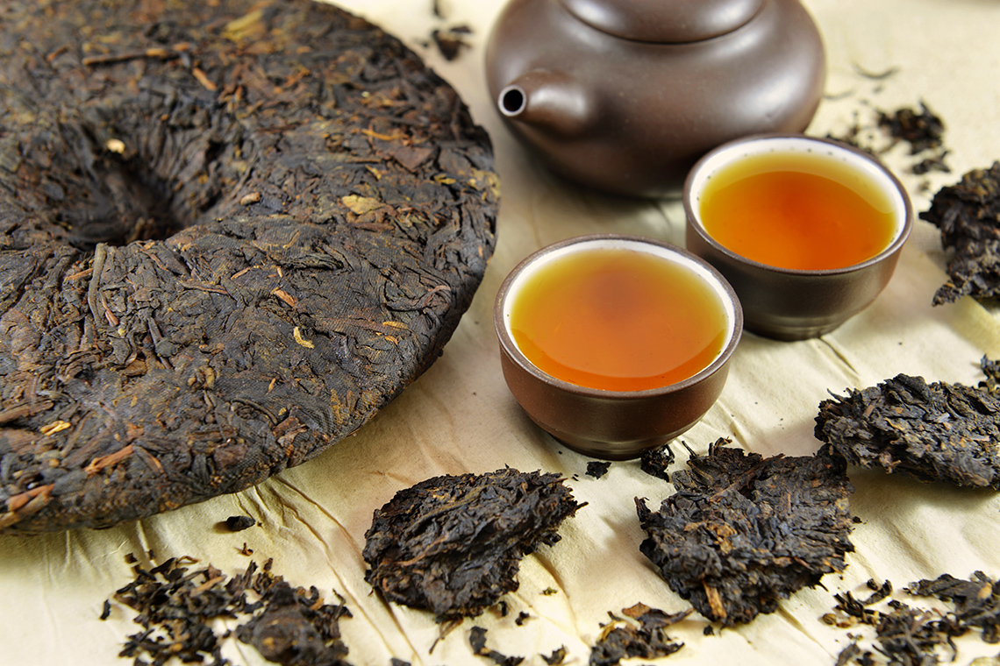

Пожилой Улун
Пожилой УлунСорта чая

Каркаде
Каркаде — это напиток, приготовленный из высушенных чашелистиков розеллы (Hibiscus sabdariffa), растущей в Азии, некоторых частях Африки и Индии.

Молочный улун
Молочный Улун — один из самых популярных сортов чая. Он нравится почти всем с первого глотка, благодаря своему легкому и яркому аромату.

Пуэр
Чай пуэр родом из Китая. Напитку более тысячи лет. Сырье для пуэра собирают на горных плантациях провинции Юньнань. В Поднебесной подчеркивают, что эти территории не обрабатываются химикатами, поэтому продукт полностью органический.

да хун пао
Да хун пао — утёсный китайский чай, который производят на северо-западе провинции Фуцзянь, в горах Уи. По классу его относят к улунам средней ферментации или полуферментированным улунам.